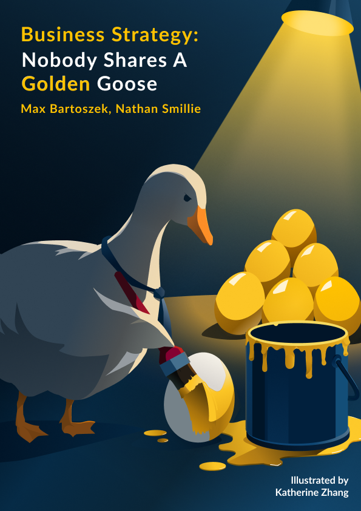

Nobody Shares A Golden Goose
By Max Bartoszek, Nathan Smillie | Illustrated by Katherine Zhang | Spring 2026 Issue | Business Strategy

The best Pitch in Finance
Sometime in the next few years, if no one has already, someone will tell you to invest in private equity. This could be your friend, advisor, or maybe even a commission-free trading app. The pitch will sound like what a director at a Canadian wealth management firm told us: "democratizing access to a high-returning asset class that previously wasn't available." [1]
For forty years, private equity was in the VIP section of investments. Pensions, endowments, and institutions got in, but you didn't. Now the rope is being lifted. Blackstone, KKR, Apollo, and Brookfield have all launched products aimed at individual investors [2]. These products aren’t shares in the funds themselves; they’re shares in private companies, packaged in a way a retail investor could buy in for a few thousand instead of millions. In Canada, CI Financial, AGF, Fidelity Canada, and Mackenzie have followed suit, while regulators have quietly eased the exemptions that once kept these funds out of ordinary portfolios [3].
Here's what doesn’t make sense. In any market, people with a real edge guard access to it. Renaissance Technologies' Medallion Fund has returned roughly 39% a year, net of fees, for three decades. It has been closed to outsiders since 1993 [4]. The best hedge funds hand capital back when they have more money than ideas. Having too much money is the tell that returns are real. Private equity behaved this way for four decades, so its sudden enthusiasm for the average Joe's chequing account leaves two possibilities: either the industry had an ethical awakening and decided to share its best returns, or the returns being offered to you are not their best returns.
Nobody would sell shares of a goose laying golden eggs. Private equity, for some reason, is.
Private equity is not a scam, but something uncomfortable is unfolding. The way private equity is sold doesn't match the real numbers. The average fund has matched public markets net of fees for nearly two decades; the liquidity is real only until the moment you need it; and the famous "stability" isn't an absence of volatility; it's the delay of it.
Comparing to Indices
Ludovic Phalippou, a professor at Oxford's Saïd Business School, published the paper the industry has never been able to answer: "An Inconvenient Fact: Private Equity Returns and the Billionaire Factory." Across every major private equity database, he found net multiples of money clustered between 1.55x and 1.63x, roughly 11% annualized, about what public indexes like the S&P 500 returned over the same period [5]. Since at least 2006, an investor in the average PE fund made the same as what they would have in an index fund. Along the way, the industry collected roughly $230 billion in performance fees [5].
To be fair, not all of it is just talk. Steve Kaplan at Chicago Booth and research he did with Robert Harris and Tim Jenkinson found that buyout vintages beat public markets by 200 to 300 basis points, and that top-quartile funds genuinely outperform [6]. That's real. But "some funds are great" is a very different claim than the one on the brochure; and the great funds are precisely the ones you can't buy.
The Retail Version Is Built to Do Worse
Here's the part the promotion won't clarify: the product with the famous brand on it is not the product the institutions own. The flagship funds, the investments that built the fund’s track records, have remained closed to retail. What you're offered is a similar product that shares a brand and a manager, but not the underlying assets [2].
Private equity fees stack up more than most people realize. Big institutional investors pay the industry-standard 2-and-20 (2% management fee + 20% of profits), and can usually negotiate it down. Retail investors can't. If you invest through a retail PE product, you pay a wrapper fee (1.25–1.5%) on top of the underlying funds' full 2-and-20, often plus extra performance and distribution fees. All-in, that's 3-4% a year before your investment earns anything [2]. On an asset class that nets index-like returns, this is the difference between matching the market and losing to it.
The exposure is diluted by design. Top-quartile returns come from the smaller, earlier, messier deals where manager skill matters most, and a retail vehicle can't hold them. So it concentrates on mature, late-stage positions such as secondary stakes, large co-investments, and credit pools. You get PE-flavored returns, just not their marketed ones.
Cliff Asness, who runs the $100-billion quant firm AQR and has no reason to complain about private investing, is blunt about the motive: he's called the retail push a "terrible idea" driven by fee hunger, from an industry that has "exhausted the institutions" and needs fresh capital to keep growing [7].
The Semi-Liquid Promise
To be fair, the wrappers fix real institutional pains. There are no capital calls, no J-curve of fees on uninvested money, and you get access to a diversified pool of vintages from day one. In place of a ten-year lockup, you get quarterly redemption windows, typically capped near 5% of the fund's assets a quarter, or roughly 20% a year [2]. It works beautifully, except for when everyone wants out at once.
BREIT: The Stress Test
In late 2022, redemption requests at Blackstone's $69-billion retail real estate fund, BREIT, blew past its caps and the gates came down. Investors couldn’t get their funds out and were rationed proportionally, quarter after quarter, through most of 2023. Normal redemptions didn't resume until early 2024 [8]. Funnily enough, no one could call this out for anything. The structure did exactly what it was designed to do, which was to stop you from leaving. An institution signs a ten-year lockup knowing they won’t see their money for a while. A retail investor in a "semi-liquid" fund believes they have access until the one moment they actually need it. Semi-liquid means liquid when you don't need it, and gated when you do.
Liquidity In a Non-Retail Fund
The people running these products will tell you it’s not completely liquid. "There's a big mismatch between the liquidity of the underlying investments and the liquidity that we offer," the director I mentioned earlier told us, walking through the notice periods, credit facilities, and secondary-market sales his fund uses to bridge the gap. "It's not like they can log in and press a button and sell whenever they want." [1] Managed carefully, investors can withdraw their funds, but it’s a result of a credit line and a queue, not a property of the assets [9].
Volatility Laundering
Private equity's last selling point is stability: public markets rapidly switch between soaring and falling, meanwhile private valuations constantly glide. Asness has a name for it, "volatility laundering" [10]. Not long ago, the fact that private holdings weren't marked to market was understood as a bug; now it's sold as a feature, and priced like one. Funds value their holdings quarterly on internal models, so when public markets crash, the marks don't. However, the underlying companies typically carry more leverage than their public peers and are more exposed to reality, not less. The volatility doesn’t disappear–it just isn't being measured.
Think of it like a house. The price feels perfectly stable, because nobody asks what it's worth until the day you sell it.
"It's More Like a Delay"
Don't take our word for it. Here's what the director said, whose job is deciding which private assets his firm buys, when we asked whether private equity actually reduces volatility:
"I wouldn't say it's really a volatility mitigator, because eventually everything does need to be marked to market. When you sell an asset, people are going to be looking at the public markets. And so eventually you're going to feel the same pain, or you're going to feel the same gain that the public market has... Clients sometimes think they're never going to see that volatility at all. But I think it's more like a delay." [1]
The stability you're being sold is a reporting artifact. When the fund finally sells the business, the price is set by the same public markets you were told you'd escaped. You held the risk the whole time; you just weren't allowed to see it.
You're Not Early. You're the Exit.
The defenders have a fair case, so let's state them properly. Retail investors deserve the same opportunities institutions get. Evergreen structures solve real problems that made PE genuinely impractical for retail. But notice what these assume: that access to a retail PE product is access to the same returns top funds make. It isn't. The top-quartile funds that justify the asset class's reputation remain exactly as closed as they were in 2010.
Even the people selling these products tell it differently. The director we interviewed mentioned private equity "might not be something that someone who only has a million dollars should be investing in." [1] A million dollars, as the floor. Per Statistics Canada, in 2023, no median net worth of an individual in any demographic reached a million dollars [11]. And he’s saying that you should remain very cautious even if you did have a million! If this is the case, it shouldn’t make sense for the average retail investor to buy into these products with their low liquidity.
Step back, and the story tells itself. Two decades of returns that matched the S&P while $230 billion in fees was kept [5], institutional fundraising cooling, and then the industry discovers its passion for the ordinary investor.
Nobody would sell shares of a goose laying golden eggs. Private equity, for some reason, is. Now you know why.